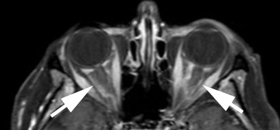
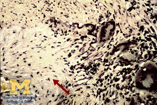
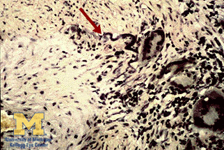
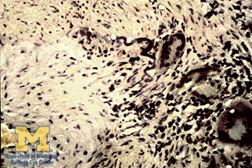

Arteritic Ischemic Optic Neuropathy

- Infarction of optic disc caused by inflammatory occlusion of branches of ophthalmic artery
- Giant cell (temporal) arteritis is principal underlying condition
- Affects patients 60 years or older
- Diagnosis suggested by combination of ophthalmic, constitutional, and laboratory abnormalities
- Diagnosis confirmed by temporal artery biopsy showing characteristic vessel wall signs
- Prompt high-dose corticosteroid treatment reduces chances of fellow eye involvement
-
Core features
- Acute painless monocular or binocular vision loss
- Reduced visual acuity, nerve fiber bundle visual field defects
- Afferent pupil defect in affected eye unless vision loss equal in both eyes
- Acquired optic disc elevation--often pallid with hemorrhage--in >95%
-
Tip: absence of optic disc edema does not exclude—but casts doubt on--this diagnosis
-
Possible accompanying ophthalmic features
- Retinal artery occlusion, cotton wool spots
- Choroidal ischemia
- Anterior chamber flare, lens opacity, ocular hypotony (“ocular ischemic syndrome”)
- Diplopia from extraocular muscle ischemia or ocular motor palsy
-
Possible accompanying systemic features
- New headache
- Scalp tenderness
- Deep jaw ache with chewing (jaw claudication)
- Fatigue, anorexia, limb girdle aches (polymyalgia rheumatica symptom complex)
-
Possible imaging features
- MRI enhancement of retrobulbar optic nerve, dura, orbital soft tissues
 -
Tip: polymyalgia rheumatica often pre-exists, but its symptoms may be so chronic and subtle as to recognized only in retrospect
-
Tip: patients are eligible for this diagnosis even without ANY systemic symptoms
- Non-arteritic ischemic optic neuropathy
- Papillitis
- Atypical optic neuritis
- Hypotensive ischemic optic neuropathy
- Papilledema
- Central retinal vein occlusion
- Infiltrative (neoplastic) optic neuropathy
-
If erythrocyte sedimentation rate and C-reactive protein are elevated and/or clinical findings suggest giant cell arteritis
- Treat promptly with intravenous methylprednisolone 1gm/day for 3-5 days or oral equivalent, followed by prednisone 1mg/kg/day
- Perform unilateral temporal artery biopsy within 2 weeks of starting corticosteroids, harvesting at least 2 cm of artery
-
Send biopsy to experienced pathologist, who will find one or more of these abnormalities in 96% of specimens

- Thickening and inflammatory destruction of media–intima junction
- Fragmentation of the internal elastic lamina
- Langerhans giant cells
-
Trap: pathologist may miss pertinent abnormalities unless at least 2cm of artery is examined because lesions may be discontinuous (skip lesions)
- Advise pathologist to hunt for scarred vessel wall and fragmentation of internal elastic lamina (healed arteritis) if biopsy is performed more than 2 weeks after corticosteroid treatment is started
-
If biopsy is positive
- Taper oral prednisone at 10mg/week, reaching prednisone dose of 10mg/day by 8 weeks after diagnosis
- Once 8 weeks have elapsed since diagnosis, raise prednisone dose only if patient redevelops symptoms suggesting active disease, disregarding elevation of sedimentation rate, C-reactive protein unless dramatic
-
Trap: raising prednisone dose based on rebound elevation of sedimentation rate or C-reactive protein after 8 weeks have elapsed since diagnosis invites corticosteroid complications and does not reduce chance of visual loss
- Keep daily prednisone dose at minimum of 10mg/day for 1 year
- Tocilizumab (Actemra) can be used to allow more rapid tapering of corticosteroid and to reduce long term corticosteroid complications, but…
-
Trap: do not use tocilizumab in place of corticosteroids initially, as its anti-inflammatory effects take time to develop
-
If biopsy is negative
- Stop corticosteroid treatment and diagnose non-arteritic ischemic optic neuropathy unless…
- Clinical findings strongly suggest arteritis or fluorescein angiography shows choroidal filling defects, in which case…
- Perform temporal artery biopsy on other side, but expect a different result in fewer than 5% of rebiopsies
- If all studies are negative, continue treatment only if clinical evidence for arteritis is overwhelming
- Visual loss usually remains stable in affected eye, but may worsen
- Ischemic optic neuropathy may strike fellow eye despite treatment
- Corticosteroid treatment should be continued no longer than 18 months after diagnosis because risk of reactivation is very low by that time and complications of prolonged corticosteroid use become high